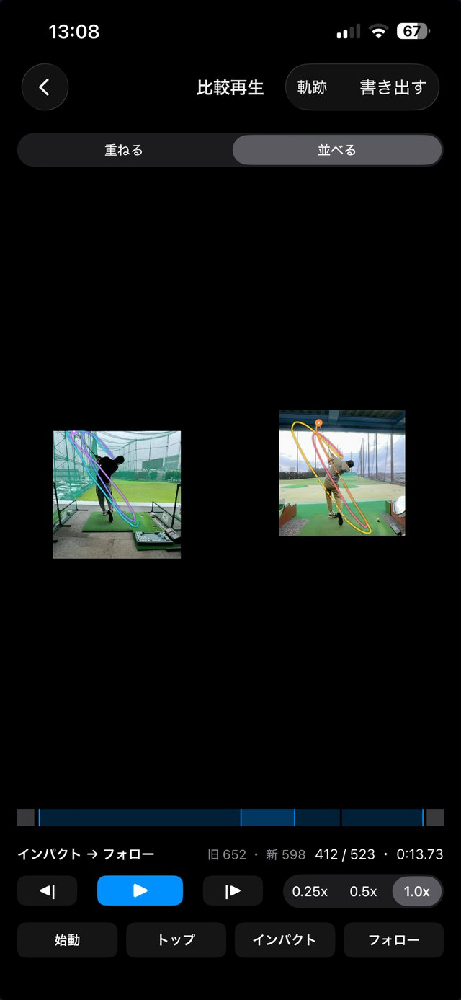
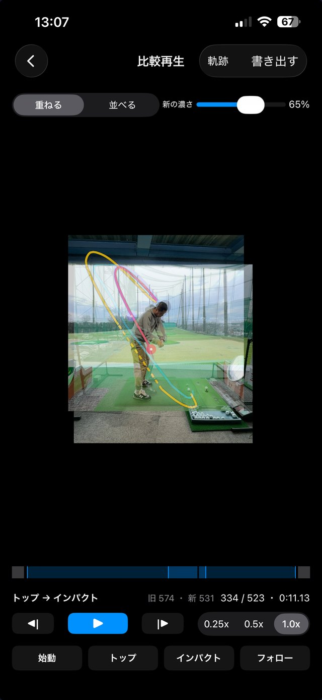
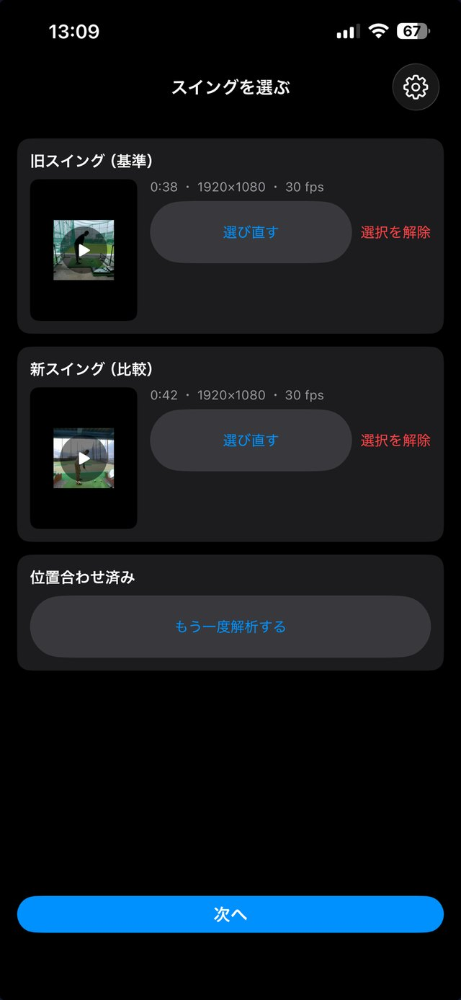
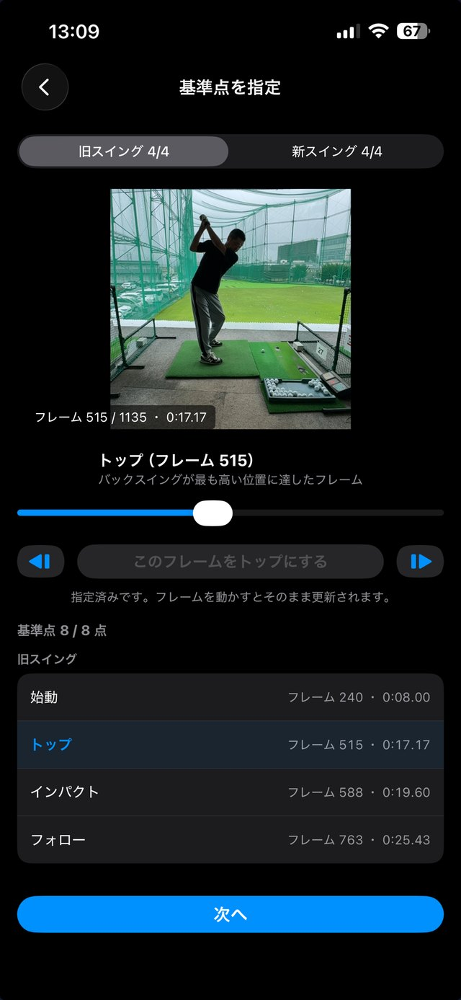
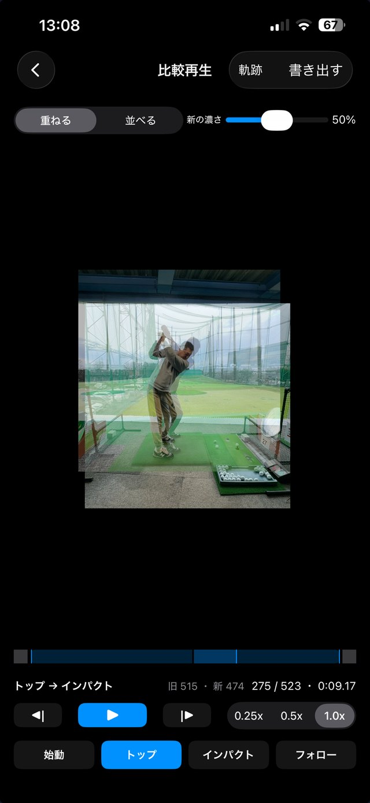

SwingTwin
SwingTwin
スイングを撮っても
見返して終わりに
なっていませんか。
SwingTwin（スイングツイン）は、過去のスイングと今のスイングを「重ねる」・「並べる」で比べるアプリです。
撮った日が違っても、大きさ・位置・タイミングを自動で揃えるから、残った差だけがフォームの違いになります。
広告なしの SwingTwin Pro あり


撮った日が違っても、
同じ大きさ・同じ位置に揃う
打席の場所も、カメラを置く距離も、その日によって違います。そのまま並べても、写り方が違うだけでフォームの差なのか分かりません。
大きさも位置もバラバラなまま並ぶので、見比べるのに補正が必要です。
身長が同じ大きさに、足元が同じ位置になるよう自動で合わせます。土台が揃うので、残った差だけがフォームの違いです。
選んで、合わせて、重ねる

動画を2本選ぶだけ
写真アプリから「旧スイング」に過去の動画、「新スイング」に今の動画を選びます。2本そろうと、人物の大きさと位置を合わせる解析が自動で始まります。
アプリ内に撮影機能はありません。iPhone標準のカメラなどで撮った動画をそのまま使います。

同じ瞬間で見比べる
始動・トップ・インパクト・フォローの4点を指定すると、その間の速さを区間ごとに合わせて、同じ瞬間どうしが並ぶようにします。
スライダーで場面を探し、1コマずつ調整できます。

重ねる／並べる、どちらでも
重ねて透かして見れば、ズレがそのまま差として見えます。新しい方の濃さは自由に変えられます。
左右に並べれば、それぞれの形をしっかり確認できます。
クラブヘッドの軌跡も、
重ねて見る
後方（飛球線の後ろ）から撮ったスロー動画では、クラブヘッドの軌跡を3色に分けて描けます。旧は青系、新は暖色系で、トップとインパクトで色が変わるので、どの区間で軌道が違うのかを追えます。書き出しにも軌跡を含められます。
比較した結果は、動画として残せる
重ねた映像をそのまま書き出して、写真アプリに保存できます。「並べる／重ねる」に加えて、軌跡を含めるかも選べます。アプリを開かなくても、練習の後に見返せます。未加入の方は、書き出すたびに短い広告を1本見てから書き出します。
動画は iPhone の中で完結します
動画をどこかへ送信することはありません。解析・比較・書き出しは、すべて端末の中だけで行われます。アカウント登録も不要です。
広告には Google AdMob を使用しています。未加入の場合、動画選択画面の下部にバナー広告が、基準点の指定画面から比較へ進むときに全画面広告が表示されることがあります。オフラインのときは広告を見られないため、軌跡と書き出しは使えません。
無料で使える機能と、
SwingTwin Pro
価格は変更される場合があります。実際の価格は購入画面でご確認ください。お支払いは購入の確定時に Apple アカウントに請求されます。サブスクリプションは、現在の期間が終わる24時間前までに解約しない限り自動で更新されます。解約は設定アプリのサブスクリプション管理から行えます。
過去の自分と、今の自分を重ねて
過去と今を見比べたい方、練習の成果を映像で確かめたい方、動画は撮るけれど見返し方に迷っていた方へ。
App Store で入手